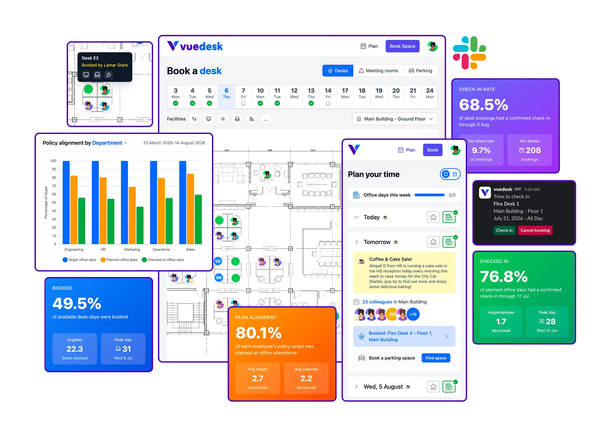

Product designer and Head of Product.
I'm Heather. I've been building software since 2007: first as a developer, then running client projects at an agency, and from 2018 as Head of Product at Vantage Space. I design products, and I can build the front end myself.
Based near Wrexham, UK · Open to product design and product roles
Projects

Vantage Space ↗
Sensor-free workplace occupancy studies, used by over 40% of the Fortune 100. How we added richer data collection for CBRE without slowing anyone else down.

vuedesk ↗
Desk booking for $1 a space, every feature included. From competitor research to a live first version in about two weeks.

nxt ↗
A to-do list you talk to. Designing conversational onboarding, voice task capture and one suggested next task instead of fifty.

Magic Bookshelf ↗
Bedtime stories where children star in the words and pictures. An AI app for young children where everything is a tap, never an open chat.
Smaller products.
From 2020 we also ran as a small product studio, trying to get from idea to something people could use as quickly as possible. nxt and Magic Bookshelf came out of that too.
Hearo. A survey tool where people answer in their own language and you read the answers in yours, with AI handling the translation both ways.
BadgeIQ. A free tool that turns badge-swipe data into anonymous trends, so workplace teams can spot patterns without tracking individuals.
Developer, then consultant, then product.
I joined a small software company straight from university as its first employee, writing PHP. As it grew into an agency I moved into Rails and front-end work, then into running projects with clients such as CBRE, the Independent Schools Inspectorate and Morgan Lovell: working out what they actually needed and turning it into specs and designs our developers could build.
A lot of that work was in commercial real estate, and we kept seeing the same gap in how occupancy data was collected. So we built our own tool. That became Vantage Space, and I was its Head of Product from 2018.
I'm still an active front-end developer and happy to get into the code when it's needed. My prototypes have been standalone interactive JavaScript apps, Rails projects built with Cursor, branches of existing codebases, and Figma prototypes, depending on the question I was trying to answer.
These days the fastest way I've found to work is designing directly in code with AI. I use Figma for flows and visual direction, then build the real thing so I can see how it actually behaves.
Say hello.
If you're hiring for product design or product, I'd love to hear about it.